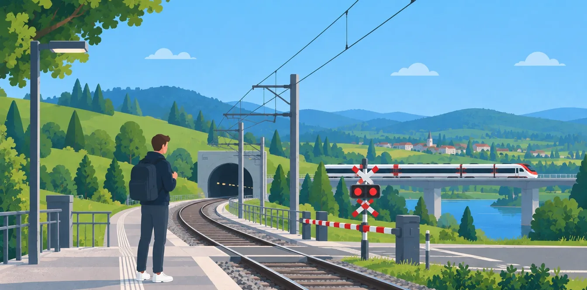
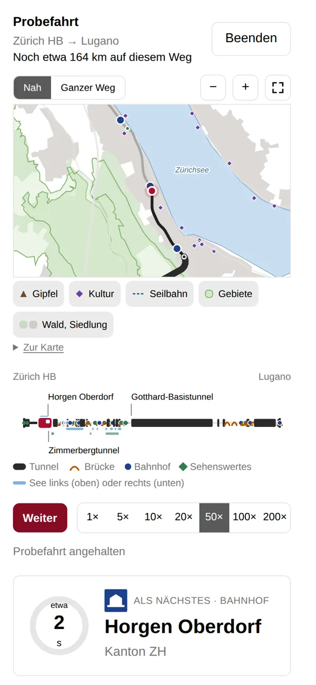
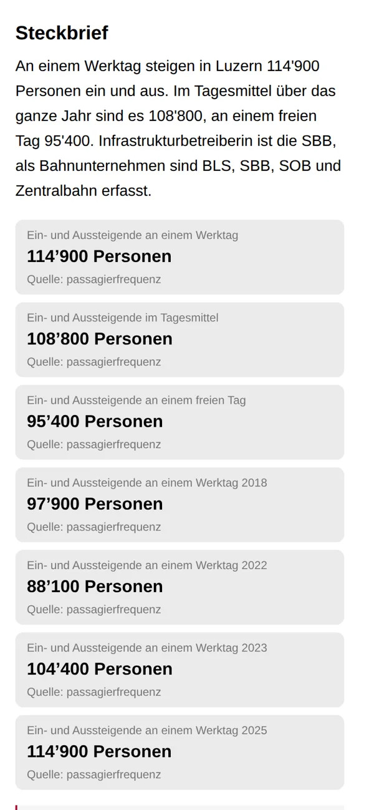
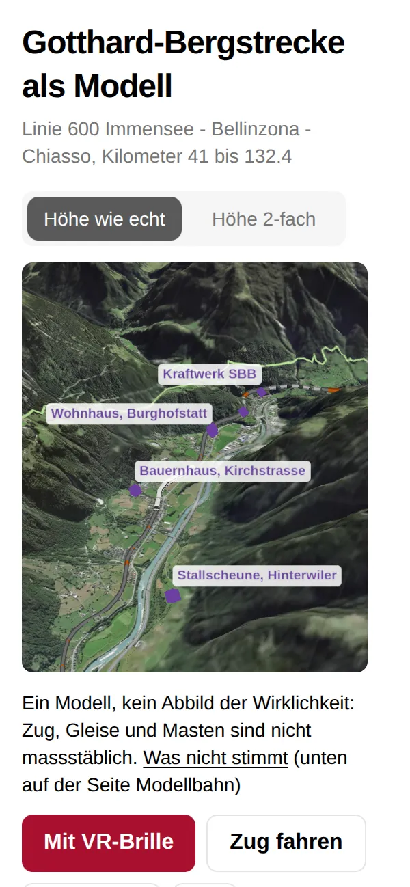
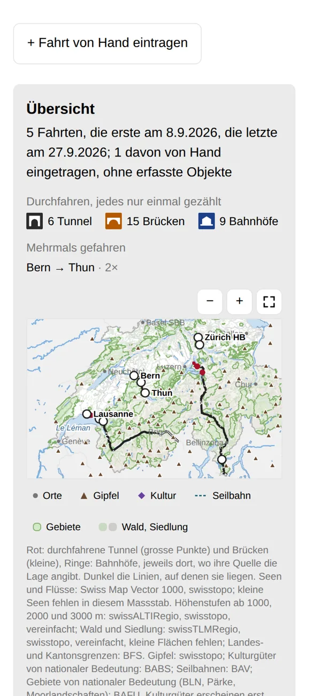
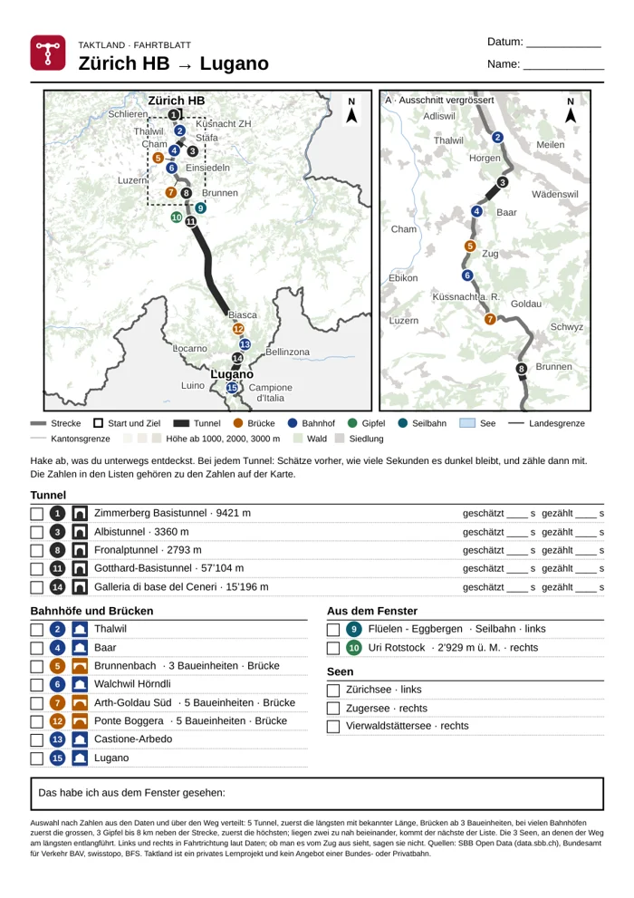

Die Schweizer Bahn kennenlernen.
Bahnhöfe, Tunnel und Brücken entdecken, im Zug mitfahren und festhalten, was du durchfahren hast. Jede Angabe stammt aus offenen Daten, mit Quelle.
Kostenlos, ohne Konto, ohne Werbung. Läuft im Browser auf Handy, Tablet und Computer.
Tunnel und Brücken laut den Daten der SBB (data.sbb.ch). Beim Fahren kommen die anderer Bahnen aus swissTLM3D von swisstopo dazu.
Fahren
Im Zug wissen, was als Nächstes kommt.
Wähle dein Ziel, und Taktland fährt per GPS mit. Vor jedem Tunnel, jeder Brücke, jedem Bahnhof und Bahnübergang ertönt ein eigener Ton, auch dort, wo der Zug nicht hält.
- Das Streckenband zeigt den ganzen Weg, mit Seen links und rechts.
- Die Karte zeigt Gipfel, Kulturgüter, Seilbahnen, Wald und Seen am Weg.
- Tunnel und Brücken, viele mit Länge, auch auf Strecken von BLS, RhB und anderen Bahnen.
- Sehenswertes, das du täglich siehst, schaltest du einzeln stumm. Am Ziel meldet Taktland die Ankunft.
- Ohne Zug ausprobieren: Die Probefahrt spielt jede Strecke ab.
- In 3D: das Gelände mit Luftbild rund um den Zug, zum Drehen und Zoomen, nah an der Strecke besonders scharf.

Bahnland
Jeder Bahnhof mit eigener Seite und Fragen.
Wie viele Menschen steigen in Luzern ein und aus? Wie lang ist der längste Perron? Zu jedem Bahnhof gibt es kurze Kapitel mit den Zahlen aus den Daten, soweit es sie gibt, und Fragen dazu. Nach jeder Antwort steht der Beleg.
- Dazu Strecken, Tunnel und Brücken mit eigener Karte.
- Was die Daten nicht wissen, steht dort als Lücke.

Spiele
Spielen mit Bahnhöfen, Strecken und Karten.
- Modellbahn: eine Strecke als Modell im Gelände, etwa der Gotthard, die Albula oder deine eigene. Drehen, zoomen und einen Zug darüber fahren lassen; mit einer VR-Brille wie der Meta Quest steht das Modell vor dir auf dem Tisch. Ein Modell, kein Abbild der Wirklichkeit.
- Geo: Wo liegt dieser Bahnhof, Tunnel oder diese Brücke? Setze deinen Pin auf die Karte.
- Duell: Zwei Bahnhöfe, Strecken oder Tunnel: Wer liegt bei einer Zahl vorne?
- Bahnhofsuche: Sechs verdeckte Hinweise, ein Bahnhof. Wie wenige brauchst du?
Geo und Bahnhofsuche auch zu mehreren, auf einem Gerät oder auf mehreren.

Reisetasche
Jede Fahrt im Logbuch.
Taktland schreibt jede Fahrt mit: Datum, Kilometer und alles, was du durchfahren hast. Das Sammelheft zeigt, welche Tunnel und Brücken dir noch fehlen.
- Notizen zu jeder Fahrt und eine Karte aller Fahrten.
- Alles bleibt auf deinem Gerät. Eine Sicherung als Datei bringt es auf ein neues.

Fahrtblatt
Zum Ausdrucken, für unterwegs.
Für jede Strecke ein Blatt mit Karte, Tunneln, Brücken, Bahnhöfen und Gipfeln zum Abhaken. Bei jedem Tunnel schätzen, wie lange es dunkel bleibt, und dann mitzählen. Einfach auf einer Seite oder ausführlich auf zwei.
